화약류관리기사 (2010-09-05 기출문제)
1과목: 일반화약학
1. 다음 중 테트릴 용도로 옳은 것은?
- 전폭약
- 가폭약
- 점화약
- 발사약
(정답률: 82%)

2. 다음 중 질산염에 해당하지 않는 것은?
- Ba(NO3)2
- KNO3
- NaCl
- NH4NO3
(정답률: 100%)
3. 한국산업표준(KS)에서 정한 전기뇌관의 품질 시험항목이 아닌 것은?
- 납판시험
- 내수시험
- 내정전기시험
- 연주시험
(정답률: 86%)
4. 화약류의 보관 방법으로 옳지 않은 것은?
- 피크린산은 철제 용기에 보관한다.
- 테트릴은 지류 상자에 보관한다.
- TNT는 목재 상자에 보관한다.
- 니트로글리세린은 동제 용기에 보관한다.
(정답률: 94%)
5. 다음 중 면역에 관한 설명 중 틀린 것은?
- 제조시 질산과 황산의 혼산을 사용한다.
- 습면약의 취급은 위험하므로 되도록 건조하여 취급한다.
- 아세톤에 용해한다.
- 질산기의 수에 따라 강면약, 약면약 등으로 구분된다.
(정답률: 79%)
6. 흑색화약 혼합성분의 역할에 대한 설명 중 옳은 것은?
- 질산칼륨은 산소와의 결합제이며 목탄은 점화를 돕고 황은 산소와 결합하여 가스를 발생시킨다.
- 질산칼륨은 산화제이며 목탄은 점화온도를 낮게 하고 황은 가스의 발생원이 되어 충격감도를 둔화시킨다.
- 질산칼륨은 점화를 돕고 목탄은 산소화의 결합제이며 황은 산화제이다.
- 질산칼륨은 산화제이고 목탄은 가스의 발생원이 되어 충격감도를 둔화시키며 황은 점화온도를 낮게 한다.
(정답률: 77%)
7. 산소 공급제로만 구성된 것이 아닌 것은?
- KNO3 NH4CIO4
- NaNO3, KCIO4
- BaCI2, BaSO4
- NaCIO4, KCIO3
(정답률: 100%)
8. 예전에 많이 사용되었던 메테강법은 무엇을 측정하는 시험인가?
- 감도
- 폭속
- 파괴효과
- 추진효과
(정답률: 95%)
9. 다음 중 안정도 시험과 관계가 없는 항목은?
- 유리산 시험
- 탄동진자시험
- 가열시험
- 내열시험
(정답률: 89%)
10. 질산암모늄 유제폭약(ANFO)에 관한 설명으로 옳은 것은?
- 배합성분에 예감제로 TNT가 배합되어 있다.
- 후가스가 좋으므로 갱내발파에 적합하다.
- 충격감도가 둔감하므로 전폭약을 써서 기폭시킨다.
- 내수성이 있으므로 수공에서 사용하기에 적합하다.
(정답률: 74%)
11. 화약 배합제에 대한 설명으로 옳은 것은?
- 산소 공급제란 폭발의 경우 생성가스를 사람과 가축에 해가 없는 산화물로 하기 위해 배합하는 것으로 나프탈렌 또는 KCI이 있다.
- 감열소염제란 질산에스테르의 자연 분해를 억제하기 위하여 배합되는 것으로 초석이나 규소철이 있다.
- 예감제란 폭약의 감도를 보강하여 증대시키기 위해 배합되는 것으로 TNT가 있다.
- 가연제란 폭발온도를 높이기 위하여 배합되며 질산칼륨, 질산나트륨들이 있다.
(정답률: 100%)
12. 트리니트로톨루엔의 제조 원료가 아닌 것은?
- C6H5CH3
- H2SO4
- HNO3
- NaOH
(정답률: 67%)
13. 화약류 감도에 대한 시험 항목의 연결이 틀린 것은?
- 폭발 충격에 대한 감도-순폭시험
- 열에 관한 감도-발화점시험
- 마찰감도-유발시험
- 전기감도-폭속시험
(정답률: 100%)
14. 흑새화약을 제조할 때 철제볼밀에 목탄과 청동제 볼을 넣어 회전하고 다음에 유황을 넣어 회전하여 혼합하는 공정을 무엇이라 하는가?
- 건조
- 입마
- 3미혼합
- 2미혼합
(정답률: 74%)
15. 뇌홍에 대한 설명이 아닌 것은?
- 화학식은 Hg(ONC)2이다.
- 비중은 a형의 것은 4.71, β형인 것이 4.93이다.
- KCIO3를 첨가하여 폭분으로 사용한다.
- 안전을 위해 물 속에 저장한다.
(정답률: 71%)
16. 낙추감도에서 임계폭점의 의미를 가장 옳게 설명한 것은?
- 일정한 높이에서 10회 떨어뜨려 한 번도 폭발을 일으키지 않는 높이
- 화약시료가 폭발을 일으키는 데 필요한 평균 높이
- 일정한 높이에서 10회 떨어뜨려 10회 모두 폭발할 때의 최소높이
- 일정한 높이에서 10회 떨어뜨려 10회 모두 폭발할 때의 최대높이
(정답률: 100%)
17. 다음 중 화합 화약류에 속하는 것은?
- 흑색화약
- 카알릿
- 니트로셀룰로오스
- ANFO
(정답률: 95%)
18. 목분을 연소시킬 때 약 961L의 산소가 부족하여 산소 공급제로 KNO3를 사용하고자 한다. 이 때 첨가할 KNO3는 약 몇 kg인가? (단, KNO3 1kg당 산소는 277L가 발생한다.)
- 1.5
- 2.5
- 3.5
- 4.5
(정답률: 93%)
19. 니트로클리콜의 성질에 대한 설명으로 틀린 것은?
- 폭발열은 약 1550~1700kcal/kg이다.
- 다이너마이트 제조 시 부동제로 사용할 수 있다.
- 비중은 약 1.5이다.
- 응고점은 -40℃이다.
(정답률: 58%)
20. 약포경이 30mm인 다이너마이트의 순폭시험을 실시한 결과 최대 순폭거리는 15cm이었다. 순폭도는 얼마인가?
- 0.15
- 0.5
- 5
- 10
(정답률: 90%)
2과목: 발파공학
21. 발파진동의 경감법으로 옳지 않은 것은?
- 터널발파에서 동상의 심빼기 패턴간에 짧은 보조 심빼기를 넣어 먼저 기폭한다.
- 폭속이 낮은 폭약을 사용한다.
- Pre-splitting 발파를 실시하여 파단면을 조성한다.
- 공당 장약량을 감소시키고, 지발당 장약량을 유지시킨다.
(정답률: 43%)
22. Trim blasting을 실시하려고 한다. 천공경이 45mm일 때, 발파설계내용으로 옳지 않은 것은?
- 공간격을 72cm로 설계하였다.
- 장약밀도는 168.75g/m로 설계하였다.
- 저항선은 93.6cm로 설계하였다.
- 서브드릴링은 28cm로 설계하였다.
(정답률: 39%)
23. 다음과 같은 조건으로 암석갱도를 굴진하려고 한다. 이 때의 갱도굴착단면적은 약 얼마인가?
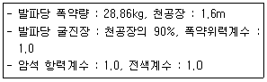
- 15m2
- 20m2
- 25m2
- 30m2
(정답률: 20%)
24. 시험발파를 실시하여 얻은 지반진동속도 자료를 회귀분석한 결과 중앙값에 대한 발파진동속도 추정식이 V=1000(D/W1/2)-1.65로 도출되었다. 이 식을 95% 상부신회수준에 대한 식으로 보정하면 얼마정도인가? (단, 식의 표준오차 0.1, 95% 신뢰도와 자유도에 해당하는 t값은 1.96이다.)
- V=1175.33(D/W1/2)-1.65
- V=1570.36(D/W1/2)-1.65
- V=2155.44(D/W1/2)-1.65
- V=2355.54(D/W1/2)-1.65
(정답률: 36%)
25. 석회계 규산염 팽창성 파쇄제에 대한 설명으로 옳지 않은 것은?
- 파쇄제의 주성분은 산화칼륨이다.
- 파쇄제의 수화반응에 의해 체적 팽창을 일으킨다.
- 파쇄제는 체적 팽창으로 발생한 팽창압에 의해 발생하는 인장응력이 파쇄대상의 인장강도 이상이 될 때 균열이 발생하여 파쇄되는 것을 이용한 것이다.
- 파쇄제의 팽창압은 물과 팽창제의 비율 및 주위 온도에 영향을 받는다.
(정답률: 8%)
26. 다음 누두지수의 함수 중 Brallion의 제안식으로 맞는 것은?
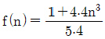
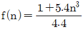
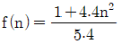
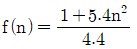
(정답률: 30%)
27. 다음 중 발파를 위한 천공작업을 할 때 준수하여야 할 사항으로 옳지 않은 것은? (단, 발파작업표준안전작업지침 (제2001-17호)에 따른다.)
- 일차 발파된 지역에서의 천공은 전지역에 폭파되지 않은 화약의 유무를 세밀히 조사하여 확인도리 때까지 실시하여서는 안된다.
- 천공작업으로 발생되는 먼지는 건식으로 제거하여야 한다.
- 천공작업과 장전작업은 일반적으로 동일지역에서 병행하여서는 안된다.
- 불발된 장전구멍에서부터 15미터 이내에서는 동력기계를 이용한 천공작업을 해서는 안된다.
(정답률: 27%)
28. 습윤한 발파공에 분산 장약을 실시할 때, 삽입 전색장의 길이로 적절한 것은? (단, 발파공의 직경은 65m이다.)
- 39cm
- 59cm
- 78cm
- 98cm
(정답률: 27%)
29. 계단높이 10m, 계단의 폭 20m, 상대암석계수 0.4kg/m3인 암반에 천공경 75mm로 수직 하향 천공하고, 장전밀도 1.⑤kg/ℓ로 에멀젼 폭약을 사용하여 지발발파를 설계할 때 공저장약량은 얼마인가? (단, 계단의 폭 좌우는 수평방향으로 구속되어 있으며 계단폭 좌우에 천공한다.)]
- 17.91kg
- 19.89kg
- 24.94kg
- 28.84kg
(정답률: 0%)
30. 다음 중 구조물 발파 해체공법에 대한 설명으로 옳지 않은 것은?
- 전도공법(Felling):기술적으로 가장 간단한 공법이나 전도방향으로 충분한 공간 확보가 필요하다.
- 단축붕과공법(Telescoping):구조물이 위치한 제자리에 그대로 붕락되도록 하는 공법이며, 주변에 여유 공간이 없을 때 주로 사용된다.
- 내파공법(Implosion):구조물의 내부에만 화약을 장전, 기폭시킴으로서 붕락시 외벽을 중심부로 끌어당길 수 있도록 유도하는 방법이다.
- 상부붕락공법(Toppling):2~3열의 기둥을 가진 건물을 선형적으로 붕괴시키는 공법으로 붕괴 후 전도가 일어난다.
(정답률: 50%)
31. 수심 10m에 2m 두께의 진흙층이 쌓여있는 높이 5m의 암반을 벤치발파하려고 한다. 직경 70mm 비트로 수직천공하고 기계식 장전하여 발파를 시행하고자 할 때 비장약량(kg/m3)은 얼마인가? (단, 수중발파에서 수직천공에 대한 비장약량은 1.1kg/m3으로 한다.)
- 2.89
- 2.20
- 1.85
- 1.39
(정답률: 27%)
32. 동절기에 사용하기 용이한 내한성 폭약에서 다른 폭약에 비해 함유량이 높은 물질은?
- 니트로글리세린
- 니트로글리콜
- 질산암모늄
- 과산화수소
(정답률: 53%)
33. 다음과 같은 조건으로 전기발파를 실시하려 한다. 병렬결선 시 소요전압을 얼마인가?
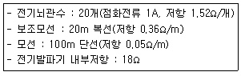
- 749.52 [V]
- 67.8 [V]
- 1082.43 [V]
- 43.1 [V]
(정답률: 22%)
34. 벤치높이(H) 10m, 천공간격(S) 6m로 MS 발파를 할 때 저항선(B)을 구하면 얼마인가? (단, Ash의 식을 이용)
- 3.6m
- 4.6m
- 5.2m
- 6.2m
(정답률: 29%)
35. 다음 중 발파로 인한 지반진동의 크기를 감소시키는 일반적인 방법으로 옳지 않은 것은?
- 자유면을 최대한 활용하여 발파 실시
- 예정 굴착단면을 분할하여 발파 실시
- 잔약량을 감소시켜 약장략 발파 실시
- 현장암의 종류와 암질에 따라 표준발파 실시
(정답률: 34%)
36. 다음 중 누두공 시험에 대한 설명으로 옳지 않은 것은?
- 누두공 시험의 결과는 경험적으로 L=CW3으로 표현되는 실험식으로 정리되고 있다.
- 적당한 폭약을 적당한 깊이에 장전해서 폭파하여 그 결과 생기는 누두공에 대해 관측하는 시험이다.
- 근래에는 소형의 모형실험으로 대신하는 경우가 많다.
- 폭약의 위력이나 암석발파에 대한 저항성을 알고, 약량산정을 위한 자료를 얻을 목적으로 실시한다.
(정답률: 36%)
37. 다단식 발파기(Sequential Blasting Machine)를 이용한 발파에 대한 설명으로 옳지 않은 것은?
- 제어발파가 가능하며, 발파진동 및 소음을 줄일 수 있다.
- 무한단차를 얻을 수 있다.
- 결선 후 연결여부 및 저항을 손쉽게 확인할 수 있다.
- 누설전류가 있는 곳에서는 사용할 수 없다.
(정답률: 32%)
38. 발파 후에 얻어지는 암석의 크기인 파쇄 압도에 관한 설명으로 옳지 않은 것은?
- 발파 후 버럭처리에 따른 후속 장비가 대용량일 경우 대괴의 버럭으로 계획하여 작업하여야 한다.
- 암석의 경우 인자강도가 압축강도에 비해 8~10배 낮기 때문에 이를 이용하여 암반을 효과적으로 파쇄하여야 한다.
- 최적 입도의 암석이란 발파 후 별도의 처리를 필요로 하지 않는 크기의 파쇄암이다.
- 벤치발파에서 파쇄입도에 영향을 미치는 요인으로는 암반 특성, 비장약량, 단위천공률 등이다.
(정답률: 34%)
39. 폭약의 폭발력을 특정한 방향으로 전달하기 위한 반구형 또는 원뿔구조를 가지고 있는 폭약에 대한 설명으로 옳지 않은 것은?
- 성형폭약(Shaped Charge)이라 한다.
- ANFO의 폭굉을 전달하기 위해 사용한다.
- 먼로 효과(Munro effect)를 사용한다.
- 철골이나 철판을 절단할 때 사용한다.
(정답률: 34%)
40. 발파 후 완전폭발이 되지 않고 발파공에 잔류폭약이 발생하였다. 폭약의 순폭도가 저하되어 잔류한 것으로 조사되었는데 그 원인으로 옳지 않은 것은?
- 분말계 폭약의 비중과대
- 약경의 과대
- 장지저장에 의한 폭약의 변질
- 흡습에 의한 폭약의 고화
(정답률: 39%)
3과목: 암석역학
41. 국제암반역학회(1981)는 체계적인 암반분류 방법을 정의한 BGO(Basic Geotechnical Description of rock masses)를 발표하였다. BGO에 의하여 암반의 풍화정도와 일축압축강도를 평가하고자 한다. 암반이 약간 풍화되었으며 일축압축강도가 120MPa일 때 분류기호는?
- W2S3
- W2S2
- W3S2
- W3S3
(정답률: 48%)
42. 암반의 변형계수를 측정하기 위한 시험이 아닌 것은?
- 수압파쇄시험
- 평판재하시험
- 압력터널시험
- Goodman Jack 시험
(정답률: 40%)
43. 다음 중 록볼트의 암반에 대한 정착효과를 확인하기 위한 시험법은?
- 인발시험
- 축력시험
- 전다시험
- 토크-인장시험
(정답률: 29%)
44. 직경이 10m, 유효크기(equivalent dimension)가 4m인 터널에서 Q값이 20일 때, 무지보 최대폭은 얼마인가?
- 10.23m
- 12.71m
- 14.63m
- 16.57m
(정답률: 24%)
45. 정수압상태의 무한판(infinite plate)에 설치된 원형공(circular hole)에 대한 2차원 탄성해석시, 원형 공의 경계에서 발생하는 최대접선응력(maximum tangential stress)은 정수압 크기의 몇 배인가?
- 1/2
- 1배
- 2배
- 3배
(정답률: 40%)
46. 피로파괴에 관한 설명으로 옳지 않은 것은?
- 피로파괴란 반복하중 후에 발생되는 파괴를 말한다.
- 반복회수가 증가할수록 피로파괴한계강도에 빠르게 도달한다.
- 피로하중에 의해 파괴될 때의 강도를 피로강도라 하며 암석의 경우 정적 최대압축강도의 40% 수준이다.
- 반복하중이란 하중을 가하다가 제거하는 것을 주기적으로 반복하는 것이다.
(정답률: 54%)
47. 다음 그림에서와 같이 터널천장에 사면체 쐐기형태의 블록이 절리면과의 마찰저항 없이 자유낙하 할 수 있는 상태에 놓여있다. 이 블록의 빗금친 밑면의 주변장이 16m라면 블록의 낙하를 방지하기 위해 전단강도가 2MPa인 숏크리트를 3cm 두께로 타설할 때 숏크리트가 지지할 수 있는 블록의 최댛중은 얼마인가?
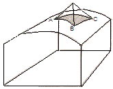
- 96ton
- 9.6ton
- 0.96ton
- 0.096ton
(정답률: 0%)
48. 시추공 벽면에서 공경방향의 변형은 평면응력상태와 평면 변형률상태에 따라 달라진다. 포아송비가 0.20일 때 (평명응력상태의 변위/평면변형률 상태의 변위)의 비는 얼마인가?
- 0.8
- 0.96
- 1.04
- 1.2
(정답률: 17%)
49. 암석파괴이론인 Hoek-Brown 파괴조건식은 다음과 같이 표현된다. 이에 대한 설명으로 옳지 않은 것은? (단, 파괴 조건식
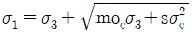
이다.)- σ1, σ3는 파괴시의 최대 및 최소주응력이다.
- σc는 절리를 포함하는 현지암반의 일축압축강도이다.
- m은 암석입자의 맞물림 정도를 표현하는 강도정수이다.
- s는 암석시료의 파쇄 정도와 관련이 있는 강도정수로서 암석의 점착력과 관련성이 크다.
(정답률: 0%)
50. 다음 중 GSI(Geological Strength Index)를 산정하기 위해 RMR(Rock Mass Rating)을 적용할 경우 암반에 대한 기본가정으로 맞는 것은?
- 절리가 매우 유리한 방향으로 발달되어 있다.
- 암반은 물로 완전히 포화된 상태이다.
- 절리간격은 100mm 이상이다.
- RQD는 70%이하이다.
(정답률: 53%)
51. 다음 그림과 같은 거동특성을 나타내는 이상 물체는 무엇인가?
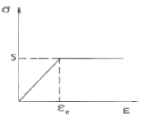
- St. Venant 물체
- Bingham 물체
- Kelvin 물체
- Maxwell 물체
(정답률: 50%)
52. RMR 분류법에 대한 설명으로 옳지 않은 것은?
- 터널의 무지보 구간의 자립시간을 평가할 수 있다.
- 대상 암반이 2개 군의 불연속면을 가지고 있는 것으로 가정하였다.
- 기초 RMR을 평가하기 위한 분류 요소는 5개이다.
- 기초 RMR을 평가하기 위한 분류 요소 중 배점이 가장 높은 것은 불연속면의 상태이다.
(정답률: 25%)
53. 모아(Mohr) 응력원을 지나는 파괴 포락선을 직선으로 가정할 때 암석의 일축압축강도 800kg/cm2, 전단강도 100kg/cm2이면 일축인장강도는 얼마인가?
- 30kg/cm2
- 50kg/cm2
- 80kg/cm2
- 120kg/cm2
(정답률: 24%)
54. 평면응력상태에서 σx=120MPa, σy=80MPa, ν=0.25, E=5GPa일 때 ϵx+ϵy+ϵz 값은 얼마인가?
- 0.01
- 0.02
- 0.03
- 0.04
(정답률: 40%)
55. 수직응력 5MPa, 절리면의 잔류마찰각 23°, 절리면의 거칠기 계수 8, 절리면의 압축강도 10MPa일 때, 이 절리면의 전단강도는 얼마인가? (단, Barton의 경험식을 이용)
- 1.22MPa
- 1.41MPa
- 2.22MPa
- 2.38MPa
(정답률: 19%)
56. 다음 중 중간주응력의 영향을 고려하는 암석파괴이론은?
- Griffith 파괴이론
- Drucker-Prager 파괴이론
- Mohr-Coulomb 파괴이론
- Tresca 파괴이론
(정답률: 42%)
57. 다음 중 암질계수(RQD)와 가장 관계가 깊은 것은?
- 절리빈도
- 절리틈새
- 절리길이
- 절리거칠기
(정답률: 54%)
58. 단면적 A, 길이 L인 원주형 시험편으로 일축압축시험을 하였더니 파괴하중이 10P였다. 동일한 시험편으로 직접인장시험을 하였더니 파괴하중이 P/2였다면 이 시험편의 취성도는 얼마인가?
- 5
- 10
- 20
- 30
(정답률: 17%)
59. 야외에서 비정형 시료에 대한 점하중강도시험을 10회 실시하고, 실험실에서 동종의 암석에 대하여 10회의 일축압축시험을 실시한 결과 σc=25p+3.5.(r2=0.98.MPa)의 관계식을 얻었다. 코어 시료의 하중점 사이의 두께(직경)가 5cm이고, 파괴하중이 0.5톤이라면 이 때의 일축압축강도는 얼마인가? (단, σc:일축압축강도, p:점하중 강도, 1MPa=10kg/cm2)
- 5.5MPa
- 23.5MPa
- 28.5MPa
- 53.5MPa
(정답률: 14%)
60. 어떤 시료에 대해 2면 전단시험을 실시한 결과 100kN에서 파괴가 발생하였고, 전단면의 면적이 50cm2인 경우 전단강도는 얼마인가?
- 5MPa
- 10MPa
- 15MPa
- 20MPa
(정답률: 43%)
4과목: 화약류 안전관리 관계 법규
61. 화약류저장소 외의 장소에 저장할 수 있는 화약류의 수량 중 토목 그 밖의 사업자가 6월 이내에 종료하는 사업을 위하여 저장하는 경우의 수량으로 맞는 것은? (단, 화약류저장소가 있는 사람에 한함)
- 도폭선 300m
- 타점충용공포탄 8만개
- 미진동파쇄가 50개
- 화약 10kg
(정답률: 0%)
62. 총포ㆍ도검ㆍ화약류 등 단속법령상 화약류의 취급방법으로 틀린 것은?
- 얼어서 굳어진 다이나마이트는 섭씨 50도 이하의 온탕을 바깥통으로 사용한 융해기 또는 섭씨 30도 이하의 온도를 유지하는 실내에서 누그러뜨려야 한다.
- 굳어진 다이나마이트는 손으로 주물러서 부드럽게 한다.
- 전기뇌관에 대하여는 도통시험 또는 저항시험을 하되, 미리 시험전류를 측정하여 0.01암페어를 초과하지 아니하는 것을 사용하는 등 충분한 위해예방조치를 하여야 한다.
- 사용하다가 남은 화약류 또는 사용에 적합하지 아니한 화약류는 즉시 폐기조치 하여야 한다.
(정답률: 34%)
63. 화약류운반용 디젤차의 구조 기준 중 배기관의 배기가스 온도는 몇 ℃ 이하로 유지하여야 하는가?
- 30
- 50
- 60
- 80
(정답률: 43%)
64. 화약류저장소의 저장방법이나 저장량을 위반한 때의 벌칙은?
- 10년 이하의 징역 또는 2천만원 이하의 벌금형
- 5년 이하의 징역 또는 1천만원 이하의 벌금형
- 3년 이하의 징역 또는 700만원 이하의 벌금형
- 2년 이하의 징역 또는 500만원 이하의 벌금형
(정답률: 15%)
65. 저장소와 보안물건 사이에 흙둑을 쌓은 경우 보안거리는 얼마 이상 두어야 하는가? (단, 1급 저장소로 폭약 25톤을 저장하고자 하며 보안물건은 석유저장시설이다.)
- 150m
- 170m
- 290m
- 310m
(정답률: 31%)
66. 규정에 의한 운반표지를 하지 아니하고 운반할 수 있는 화약류의 수량으로 맞는 것은?
- 300개 이하의 공업용뇌관 또는 전기뇌관
- 5000개 이하의 실탄ㆍ공포탄
- 1000개 이하의 미진동파쇄기
- 1000m 이하의 도폭선
(정답률: 34%)
67. 꽃불류 사용의 기술상의 기준에 대한 설명으로 틀린 것은?
- 풍속이 10m/sec 이상일 때는 꽃불류의 사용을 중지해야 한다.
- 사용준비가 끝난 쏘아 올리는 꽃불류로부터 30m 이내의 장소에서는 다른 쏘아 올리는 꽃불류를 사용하지 않아야 한다.
- 쏘아 올리는 꽃불류는 20m 이상의 높이에서 퍼지도록 해야 한다.
- 꽃불류의 발사용 화약에 점화하여도 그 화약이 폭발 또는 연소되지 아니하는 때에는 그 발사통에 많은 양의 물을 넣고 10분 이상 경과한 후에 서서히 발사통을 눕히어 꽃불류를 꺼내야 한다.
(정답률: 38%)
68. 화약류를 도난당하거나 잃어버린 때에는 소유자 또는 관리자는 지체없이 국가결찰관서에 신고하여야 한다. 신고를 하지 않을 경우 행정처분기준으로 맞는 것은?
- 6월의 효력정지
- 3월의 효력정지
- 1월의 효력정지
- 15일의 효력정지
(정답률: 43%)
69. 폭약 1톤으로 환산하는 수량에 해당되지 않는 것은?
- 실탄 또는 공포탄 100만개
- 신관 또는 화관 5만개
- 신호뇌관 25만개
- 미진동파쇄기 5만개
(정답률: 43%)
70. 위험공실의 준방폭식 구조의 기준에 대한 설명 중 틀린 것은?
- 출입구의 방폭면 외의 벽에 설치한다.
- 방폭면에는 되도록 큰 창을 설치한다.
- 출입구의 폭은 1.5m 이하로 한다.
- 지붕은 방폭방향에 대하여 상향으로 경사지게 한다.
(정답률: 38%)
71. 다음 중 화약류의 폐기에 관한 설명으로 맞는 것은?
- 폐기장소 주위에 높이 1.5m 이상의 흙둑을 설치하고 주위에 붉은색 기를 단다.
- 모든 화공품은 소량씩 폭발 처리한다.
- 화약류를 연소시킬 때는 바람이 적은 날을 택하여 바람이 불어가는 방향으로 점화하고, 폐기 후 관하 지방경찰청장에게 보고하여야 한다.
- 화약류 제조업자가 제조과정에서 생긴 화약류를 그 제조소 안에서 폐기하는 경우에는 관할 경찰서장에게 신고할 필요가 없다.
(정답률: 50%)
72. 과태료처분에 불복이 있는 사람은 그 처분이 있음을 안 날부터 며칠 이내에 관할관청에 이의를 제기하여야 하는가?
- 7일
- 15일
- 30일
- 60일
(정답률: 30%)
73. 화약류관리보안책임자 면허를 반드시 취소해야 하는 경우에 해당하지 않는 것은?
- 국가기술자격법에 의하여 자격이 취소된 때
- 면허를 다른 사람에게 빌려준 때
- 20세 미만의 사람
- 화약류를 취급함에 있어 중대한 과실로 폭발 등의 사고를 일으키어 사람을 다치게 하였을 때
(정답률: 39%)
74. 화약류저장소에 흙둑을 쌓고자 한다. 다음 설명 중 틀린 것은?
- 저장소의 바깥쪽 벽으로부터 흙둑의 안쪽 벽 밑까지 1m 이상 2m 이내의 거리를 두고 쌓아야 한다. 다만, 저장소 출입구쪽의 흙둑은 화약운반용 지게차 등이 출입할 수 있도록 2m 이상의 거리를 둘 수 있다.
- 2개 이상의 저장소가 인접하여 중간의 흙둑을 같이 용할 때는 그 흙둑에 통로를 설치하여 지게차의 통행 및 피난 등에 활용하여야 한다.
- 흙둑을 부득이 흙담으로 하는 경우 흙담의 높이는 흙둑 높이의 1/3 이하로 한다. (단, 꽃불류 저장소 제외)
- 흙둑의 경사와 정상의 폭은 45도 이하와 1m 이상으로 한다.
(정답률: 38%)
75. 다음 중 용어의 정의로 틀린 것은?
- 공실이란 화약류를 제조작업을 하기 위햐여 제조소 안에 설치된 건축물을 말한다.
- 화약류 일시저치장이란 화약류의 취급과정에서 화약류를 일시적으로 저장하는 장소를 말한다.
- 정체량이란 동일 공실에 저장할 수 있는 화약류의 최대 수량을 말한다.
- 보안물건이란 화약류의 취급상의 위해로부터 보호가 요구되는 장비ㆍ시설 등을 말하며, 화약류취급소는 제 4종 보안물건이다.
(정답률: 40%)
76. 화약류의 제조에 관한 시설 및 기술의 기준을 무엇으로 정하는가?
- 행정안전부령
- 대통령령
- 국무총리령
- 경찰청령
(정답률: 19%)
77. 화약류의 사용 허가 및 양도ㆍ양수 허가와 관련한 설명으로 옳지 않은 것은?
- 화약류 사용허가신청서는 사용지 관할 경찰서장에게 제출해야 하며, 사용지가 2개 관할에 걸쳐 있을 시에는 주된 사용지 관할 결찰서장에게 제출한다.
- 화약류 양도ㆍ양수허가 신청은 사용지 관할 경찰서장에게 신청해야 하며, 사용지가 특정되지 않으면 양도ㆍ양수허가를 받을 수 없다.
- 화약류 양수허가의 유효기간은 1년을 초과할 수 없다.
- 화약류의 양도ㆍ양수허가 신청시 화약류사용허가증 사본을 첨부하여야 한다.
(정답률: 27%)
78. 다음 중 화약류를 취급할 수 있는 사람은?
- 파산선고를 받은 자로서 복권되지 아니한 사람
- 금고 이상의 형의 집행유예선고를 받고 그 집행유예 기간이 끝날 날로부터 1년 6개월이 지난 사람
- 금고 이상의 형의 선고를 받고 집행을 받지 아니하기로 확정된 후 2년이 지난 사람
- 총포ㆍ도검ㆍ화약류 등 단속법의 규정을 위반하여 벌금형의 선고를 받고 1년이 지난 사람
(정답률: 31%)
79. 영화 또는 연극의 효과를 위하여 1일 동일한 장소에서 사용허가를 받지 아니하고 사용할 수 있는 꽃불류의 수량으로 맞는 것은? (단, 쏘아 올리는 꽃불류 제외)
- 원료화약 또는 폭약 15g 미만의 꽃불류 60개 이하
- 원료화약 또는 폭약 15g 이상 30g 미만의 꽃불류 30개 이하
- 원료화약 또는 폭약 30g 이상 50g 미만의 꽃불류 10개 이하
- 발연통ㆍ촬영조영통 또는 폭약(폭발음을 내는 것에 한한다.) 1g 이하의 꽃불류
(정답률: 27%)
80. 화약류저장소에 대한 설명 중 옳지 않은 것은?
- 꽃불류저장소 주위에는 방폭벽을 설치할 수 없다.
- 2급저장소는 일시적인 토목공사를 위해 설치하는 저장
- 화약류 판매업자는 자가전용 화약류저장소를 설치해야 한다.
- 지상 1급저장소의 출입문은 2중문으로 하고 덧문에는 두께 3mm 이상의 철판으로 보강하되 2개 이상의 자물쇠 장치를 해야 한다.
(정답률: 43%)
5과목: 굴착공학
81. 개착공법을 분류할 때 전단면 굴착공법에 해당하는 것은?
- 소굴식 공법
- 분할식 공법
- 트렌치식 공법
- 선진 도갱 공법
(정답률: 29%)
82. 실드(shield)공법에 의한 굴착에서 실드는 약장과 작업실을 분리하는 격벽 구조에 따라 전면개방형, 부분개방형, 밀폐형의 3종류로 분류된다. 다음 중 부분개방형 실드에 속하는 것은?
- 이수식 실드
- 토압식 실드
- 수굴식 실드
- 블라인드식 실드
(정답률: 47%)
83. 2개 이상의 가스저장공동이 인접해 있어 가스의 누출을 방지하기 위하여 수평 수벽(Water curtain)시설을 설치하는 경우 필요 수압을 작게 하기 위한 방법으로 가장 거리가 먼 것은?
- 수벽공간의 간격을 좁게 한다.
- 수벽공과 공동상부와의 간격을 가깝게 한다.
- 공동간의 간격을 넓게 한다.
- 공동의 폭을 크게 한다.
(정답률: 23%)
84. 다음 그림과 같은 원형 단면의 터널에서 일반적으로 인장응력이 가장 크게 발생하는 지점은 어느 곳인가?
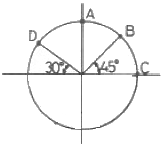
- A점
- B점
- C점
- D점
(정답률: 43%)
85. 터널의 인버트(invert) 시공에 대한 설명으로 옳지 않은 것은?
- 원지반 상태가 불량할수록 곡률반경을 작게 하여 시공한다.
- 인버트 콘크리트를 복공보다 먼저 시공하는 것은 선타설방식이다.
- 인버트의 시공은 굴착 개시부터 폐합까지 가능한한 천천히, 길게 하는 것이 중요하다.
- 팽창성 원지반에서 부풀음이 발생한 경우에는 인버트에 록볼트를 타설하는 일도 있다.
(정답률: 29%)
86. 지하수면 이하의 실트질 모래에 대한 표준관입시험 시 실측된 N=20이었다. 수정 N값을 구하면 얼마인가?
- 14.5
- 15.5
- 16.5
- 17.5
(정답률: 0%)
87. 점착력 30kN/m2, 단위중량 20kN/m3인 연약점토에 60°의 각도로 사면을 굴착하는 경우 굴착할 수 있는 최대 깊이는 얼마인가? (단, 안정계수는 5.4이다.)
- 3.6m
- 5.6m
- 8.1m
- 11.2m
(정답률: 20%)
88. 도시생활의 기번이 되는 통신 시설 및 전력 시설의 지중화는 지하의 어떤 특성을 이용한 것인가?
- 격리성
- 차음성
- 차광성
- 저장성
(정답률: 36%)
89. 다음 그림과 같은 정단층이 발생하기 위한 응력조건에서 수평응력(σh)과 수직응력(σv)의 비(K=σh/σv)로 가장 적당한 것은?
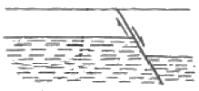
- 0.5
- 1.0
- 1.5
- 2.0
(정답률: 32%)
90. 화성암을 분류할 때 염기성암에 해당하는 것은?
- 반려암
- 유문암
- 안산암
- 섬록암
(정답률: 20%)
91. 숏크리트의 습식공법과 비교하여 건식공법의 단점으로 옳지 않은 것은?
- 콘크리트의 품질관리가 어렵다.
- 장거리 압송에 부적합하다.
- 분진의 발생량이 비교적 많다.
- 리바운드량이 비교적 많다.
(정답률: 44%)
92. 다음 중 터널 굴착 시 용수처리를 위한 보조공법이 아닌 것은?
- 포어폴링공법
- 암기공법
- 약액주입공법
- 동결곡법
(정답률: 29%)
93. 다음 중 록볼트의 지보효과로 옳지 않은 것은?
- 빔 형성 효과
- 지반 개량 효과
- 원지반 아치 형성 효과
- 풍화 방지 효과
(정답률: 22%)
94. 주동토압계수(Ka)가 1/3인 경우 Rankine의 토압이론에 의한 수동토압계수(Kp)는 얼마인가?
- 1.0
- 2.0
- 3.0
- 4.0
(정답률: 39%)
95. 토입자의 비중이 2.6인 흙의 전체단위중량이 2t/m3이고 함수비가 20%이다. 이 흙의 포화도는?
- 67.7%
- 73.4%
- 85.2%
- 92.9%
(정답률: 0%)
96. 터널굴착을 위한 조사 중 시공 단계에서의 조사 항목이 아닌 것은?
- 실시설계 검토
- 설계방법 검토
- 시공방법 검토
- 시공관리 검토
(정답률: 0%)
97. 지하 암반내에 직경 8m의 터널을 굴착하였다. 숏크리트에 작용하는 응력이 20000kg/m2이고 숏크리트의 허용 전단응력이 150000kg/m2일 때 숏크리트의 두께를 산정하면 얼마인가? (단 Rabcewicz(1995)의 제안식 이용)
- 30cm
- 23cm
- 18cm
- 13cm
(정답률: 44%)
98. 주상절리나 똑바로 선 판상절 리가 발달한 화산암으로 구성된 암반 사면에서 발생할 수 있는 사면 파괴의 형태는?
- 원호파괴
- 전도파괴
- 평면파괴
- 쐐기파괴
(정답률: 39%)
99. , 다음 그림과 같이 폭 b, 높이 h인 암반 블록이 경사각 β인 사면위에 위치할 때 전도(toppling) 또는 미끄러짐(sliding)이 발생하지 않을 조건은? (단, 암반 블록과 사면의 마찰각은 ø이고, 점착력은 무시할 것)
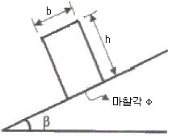
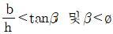
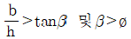
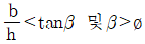
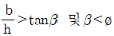
(정답률: 17%)
100. 터널 주변에 발달한 이완영역의 범위를 파악하고 록볼트의 적정 길이를 판정할 목적으로 실시하는 계측 항목은?
- 콘크리트 라이닝의 응력측정
- 전단침하 측정
- 지중변위 측정
- 내공변위 측정
(정답률: 19%)